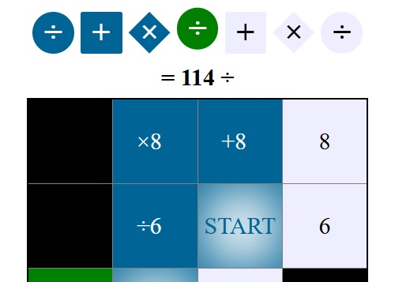
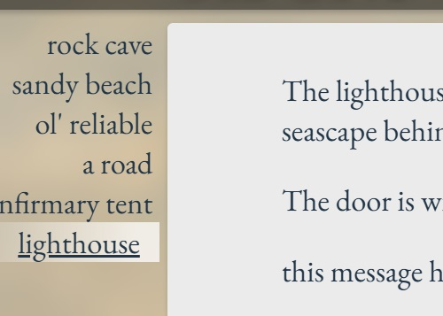

Sequence

A daily puzzle with an online global leaderboard.
Each day players weave a path around a new board of numbers, with each step influencing their chance at getting a high score.
Sonar Search

A point-and-click game made in 72 hours for the Ludum Dare competition.
Created using Easel, a JavaScript library I built to develop complex visuals & interactivity.
Features first person navigation, a usable in-game computer, and paper you can draw on.
Old Cove

A text-based adventure with dynamic scripting, bringing emergent capabilities into a typically stagnant medium.
Creating using Syntaxlor, an NPM package I built for creating scripting languages tailored to a specific use case.